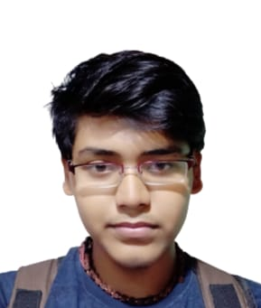

Akash

Summary
I am a dedicated and hard-working MERN stack developer who is always ready to learn about new technological stuffs.
Education
Bachelor of Technology, ECE - NIT Delhi (2021-2025)
XIIth, PCM - GD DAV PUBLIC SCHOOL (2020)
Work Experience
Skills
- Coding: ⭐⭐⭐⭐
- Leadership: ⭐⭐⭐⭐
- Team Management: ⭐⭐⭐⭐⭐
- Communication: ⭐⭐⭐⭐
- Problem Solving: ⭐⭐⭐⭐⭐
Awards and Certifications
- Led our school’s chess team to a top-5 finish in the inter-school chess competition
- Longest Serving DGS of the cultural club of NIT Delhi
- Runner-up in a guitar playing competition
- Completed the ”Finding the Leader in You - Scholar Program” by the Competitiveness Mindset Institute, USA
Other